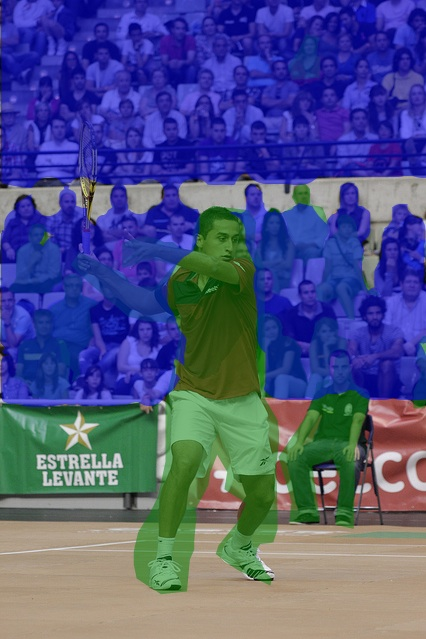
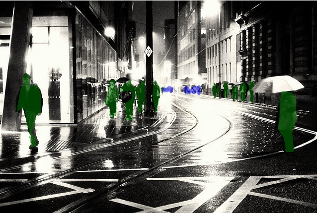

×
Examples of expected results:
 
Draw all unlabeled
cat(s)
in the image.
Find and draw on
all cat(s)
that haven't been labeled.
No need
to draw on previously labeled (green) regions. It's fine to overlap.
Draw (D)
Erase (E)
Draw Line (T)
Zoom In (Z or scroll)
Zoom Out (X or scroll)
Download
Branch (A)
Bud (Z)
Branch2 (E)
mark4 (Q)
mark5 (S)
wire (S)
wounds (S)